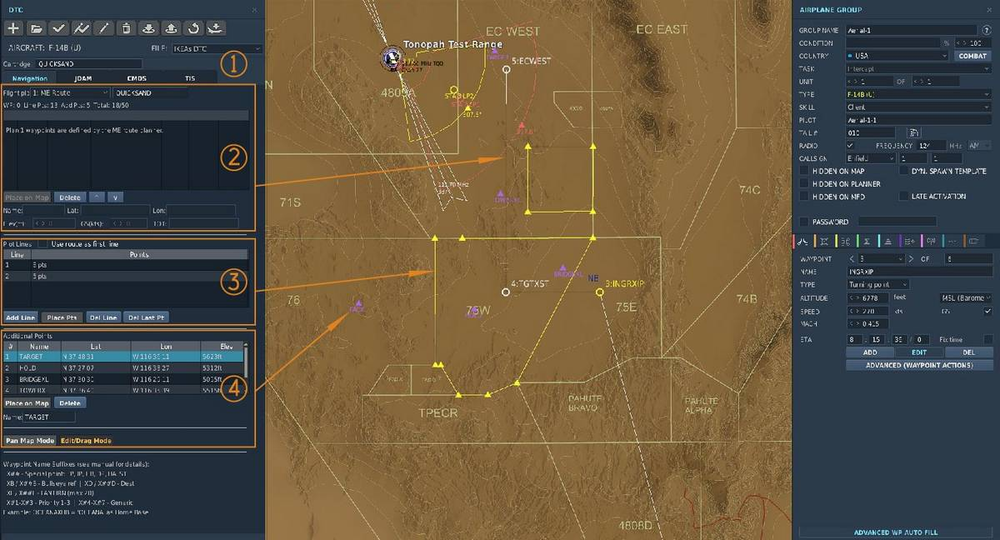

Mission Data Loader
The Mission Data Loader (MDL) provides bulk storage of mission-essential data.
The Data Transfer Module (DTM) can be loaded in the Mission Editor with a range of navigation and mission computer data. Navigation data are transferred to the CDNU using a special pass-through function of the EGI.
The MDL may contain two separate waypoint databases, a magnetic variation (MAGVAR) table, up to twelve flight plans, and the current GPS almanac. The waypoint databases contain 5-character alphanumeric identifiers and the associated data for each waypoint, as well as the effective dates of the information.
The primary waypoint database is maintained on the MDL. When a DTM is inserted into the MDL, identifier indices are automatically transferred into CDNU memory to speed the search process when a specific waypoint is requested. Transfer of the indices to the CDNU takes approximately 60 seconds. The primary waypoint database is not available until this process is complete.
The MDL Start page is accessed by scrolling up from the EGI Start 1/2 page or down from the EGI Start 2/2 page. Display line 3 contains the MDL cartridge label and date stamp; display line 3 is blank if no cartridge is installed. Display line 5 contains the date stamp for the MAGVAR table if it is loaded; otherwise, it is blank. Pressing LSK4 on this page erases the flight plan currently loaded into the CDNU. Pressing LSK8 transfers the user to the Flight Plan Select 1/2 page.

(
(
(
(
(
(
(
(
If a primary database exists on the MDL, this is indicated by "↑PRI↑" on display line 2 of the MDL Start page. Display line 1 displays the effective dates for the database. Display line 3 displays the MDL cartridge label and date stamp; display line 3 is blank if no cartridge is installed. Display line 5 displays the date stamp for the magnetic variation database in the CDNU; display line 5 is blank if the database does not exist.
Flight Plan

(
Navigation lets the operator plan 12 unique flight plans with 50 preset waypoints each. JDAM lets the operator pre-plan a JDAM strike. CDMS lets the operator define countermeasure profiles. TIS lets the operator enter special settings for the Tactical Imaging Set.
(
(
(
Designation of Special Points, Bullseye, LANTIRN, and Priority Waypoints
The aircrew may designate any of the waypoints in a flight plan as the Bullseye waypoint or a LANTIRN waypoint, as well as designating them for one of the six special waypoints (FP, IP, HB, DP, HA, or ST).
This is done in the mission editor by appending the appropriate alphanumeric string to the waypoint name while assembling the flight plan. Addition of the Bullseye or LTS designation does not alter the waypoint label seen on the CDNU. The additional characters are used internally by the CDNU and MDP. The designation can also be changed on the CDNU.
Special Point Designation
If a waypoint name ends in "X##", where ## refers to any of the WCS Special Waypoints designators (FP, IP, HB, DP, HA, ST), then the CDNU will identify then waypoint as being assigned to that special waypoint. For example, "OCEANA" may be designated as Home Base by appending "XHB" to the waypoint name so that it reads: "OCEANAXHB".
The CDNU will not display the suffix, only the root name, although it will store the entire name. Note that waypoints designated as Special Points may also be designated as Destination or Bullseye waypoints. See the following paragraphs.
CAUTION If more than one waypoint is designated as the same Special Point (e.g. 2 WP’s assigned as HB) in a flight plan, the navigation system will ignore all of the waypoints so designated.
Upon activation of a flight plan, if the following designations are attached after the "X" or "X##" at the end of a waypoint name, the CDNU will identify the points accordingly.
-
"B" − Bullseye
-
"D" − Destination
-
"1" − Priority 1
-
"2" − Priority 2
-
"3" − Priority 3
-
"4" − "7" − Generic Priority
-
L − LTS
The D, 1, 2, 3, 4, 5, 6, 7 and L modifications can also be made after Flight Plan upload using the CDNU Waypoint Edit 1/2 page. The Bullseye ‘B’ designation can be made or changed using the PTID NVD WP page, the TID OFFSET function, or BE REDESIG (D/L FB #4) on the CAP.
Bullseye Designation
If a waypoint name ends in "XB" or "X##B", where ## refers to any of the WCS Special Waypoint designators (FP, IP, HB, DP, HA, ST), the CDNU will identify the waypoint as the Bullseye Reference Point. For example, the waypoint "DALLAS" can be designated as the bullseye waypoint by changing its name to "DALLASXB". The CDNU will continue to display "DALLAS", but the MDP will identify the waypoint as the Bullseye Reference Point. Only one Bullseye waypoint can be designated in any given flight plan. If more than one waypoint name has the Bullseye suffix, the navigation system will ignore all of the points so designated.
LTS Designation
If a waypoint ends in "XL" or "X##L", where ## refers to any of the WCS Special Waypoint designators (FP, IP, HB, DP, HA, ST), the navigation system will transfer that waypoint to the LCP. For example, the waypoint "DALLAS" can be designated as a LANTIRN waypoint by changing its name to "DALLASXL". The CDNU will continue to display "DALLAS", but the weapon system will identify the waypoint as a LANTIRN waypoint. Up to 20 waypoints may be so designated. If more than 20 waypoints are designated as LANTIRN waypoints, only the first 20 in the flight plan will be transferred to the LCP.
Waypoint Display Priority
Due to system limitations a maximum of 18 waypoints − the six special points (FP, IP, HB, DP, HA, ST) and twelve additional waypoints − can be displayed at one time on the PTID TAC or NVD WP pages. With each flight plan able to contain up to 50 waypoints, some sort of prioritization scheme must be used to which waypoints will be visible at any given time on the PTID. The priorities used by the WCS for display are (in order):
-
Special Point
-
Priority WP (1, 2, and 3 in order)
-
Bullseye
-
Hooked WP
-
CDNU Fly−To WP (AUTO/MAN/OFLY)
-
Destination WP
-
Previous Hooked WP
-
Generic Priority
-
WP range
(the closest without a higher priority) With this scheme, the RIO may assign a priority to a waypoint so that it is always one of the 18 waypoints displayed (provided it is within range scale selected on the PTID). Waypoints that have two priority designations are counted only once for the purposes of display.
For example, if the Bullseye Point is also Hooked, it is given the Bullseye priority and no point is given the Hooked Point priority. Likewise, if a waypoint is both a Special Point and one of the priority waypoints as listed above, it is treated as a Special Point for display purposes and its status as a priority waypoint is ignored.
Plot Lines
Plot Lines may be drawn between a group of waypoint to delineate areas of interest like restricted areas, the Forward Edge Battle Area (FEBA), areas of hostile forces etc. A plot line may be inserted between any two waypoints contained in the CDNU active flight plan. Up to nine waypoints may be strung together to plot complex areas.
For an in depth discussion of plot lines refer to the PTID Plot Line chapter.
JDAM Planning Tool
The JDAM Planning Tool section is found in the GGW Pre Planned Employment Section.
ALE-47 Counter Measure Dispensing system (CDMS) programming
The CDMS programmer is found in the ALE-47 Section.
Tactical Imaging System
The TIS Section is found in the FTI Section.